Earth that breathes, water that should not be that blue, light the color of the stone on the desk. Steam, bison, and an evening that refuses to end.会呼吸的土地，不该那么蓝的水，和书桌上那块黄石头同色的光。蒸汽、野牛，和一个不肯结束的黄昏。
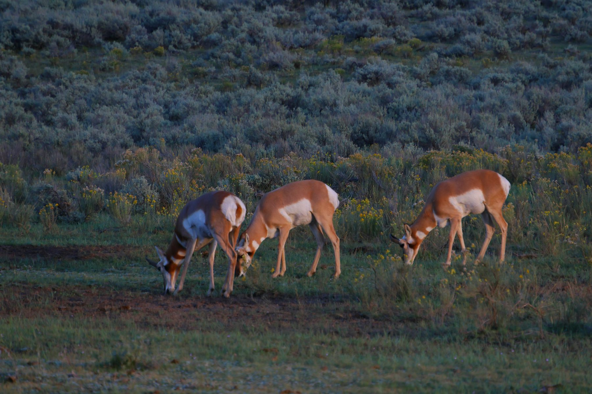
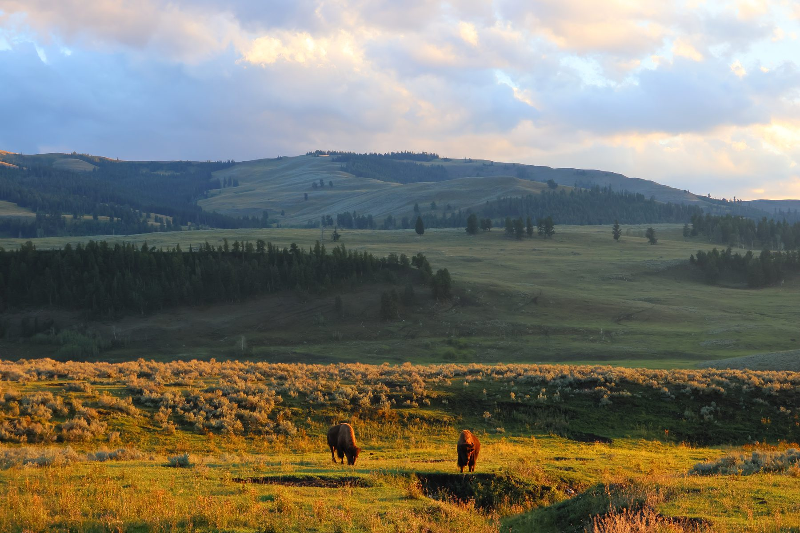
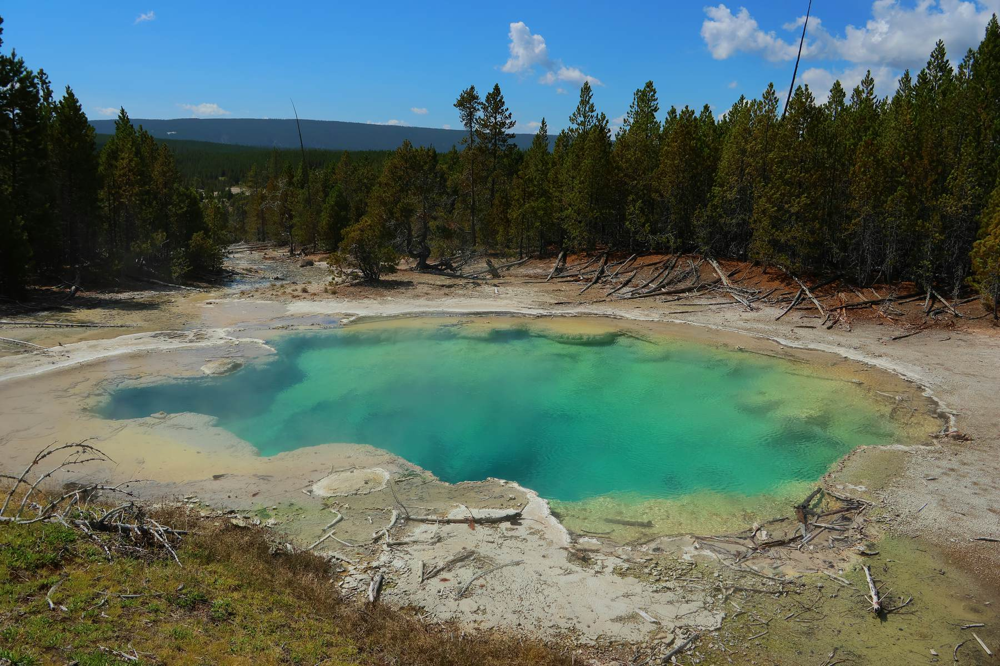
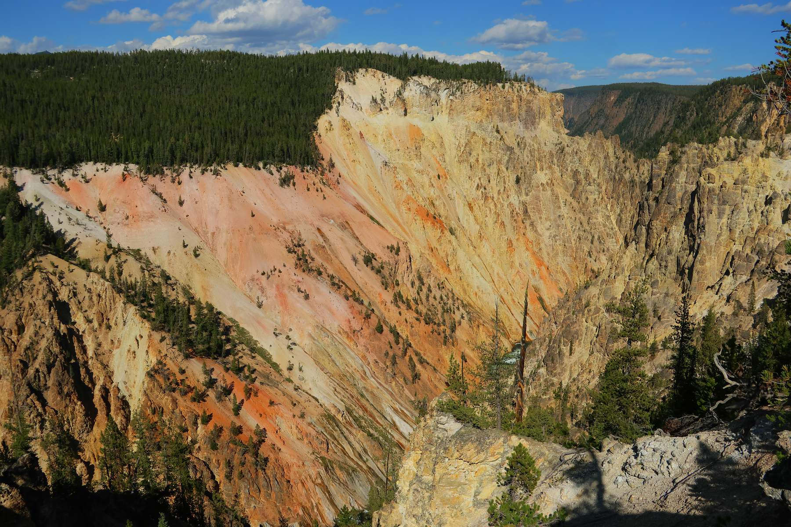
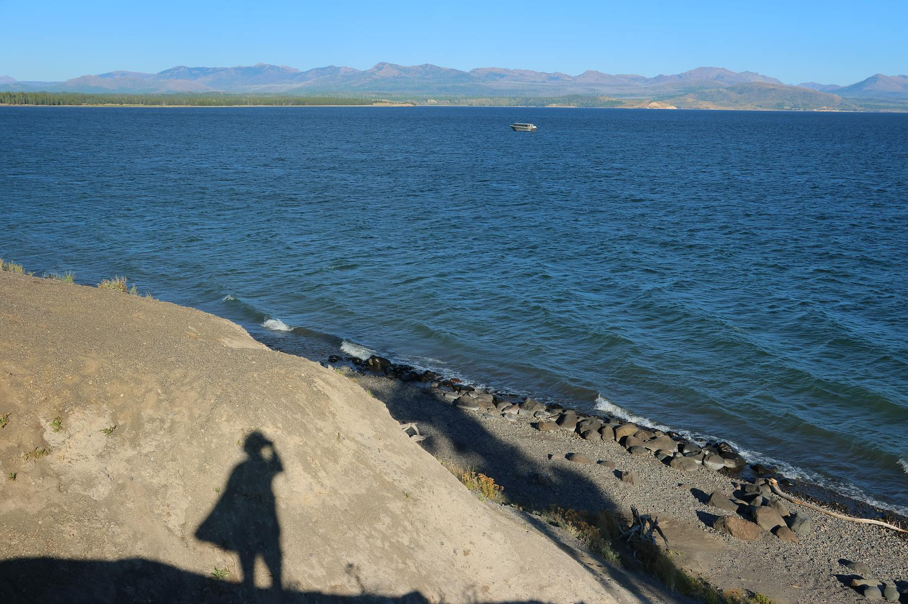
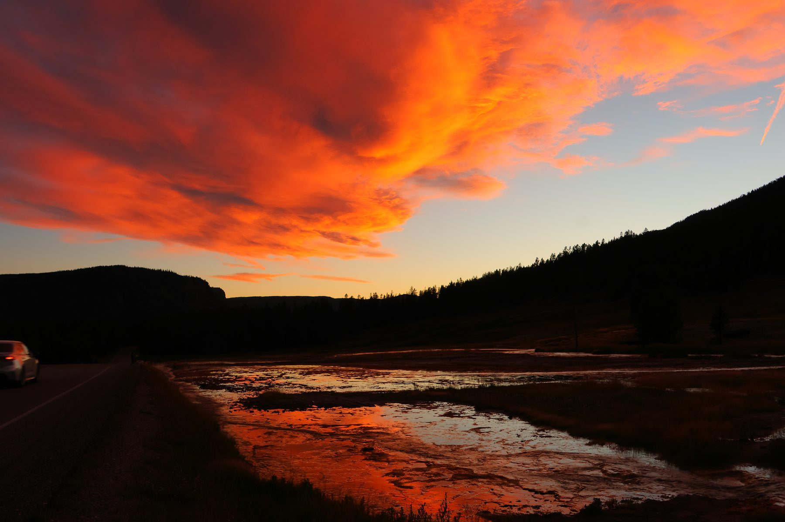
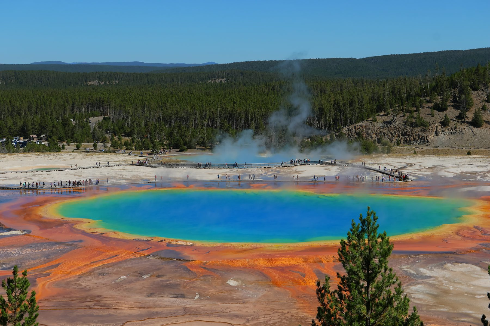
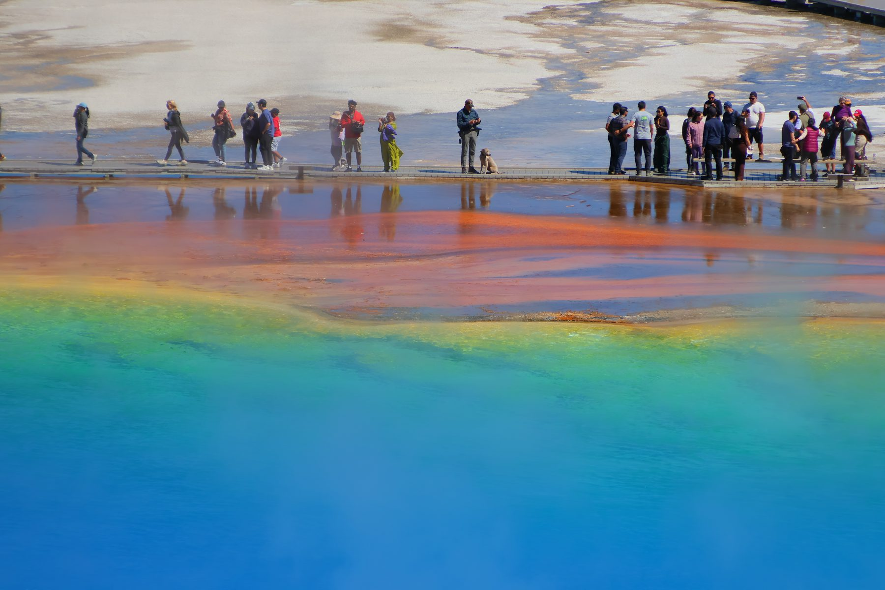
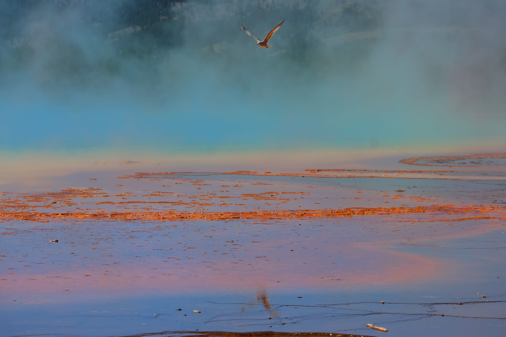
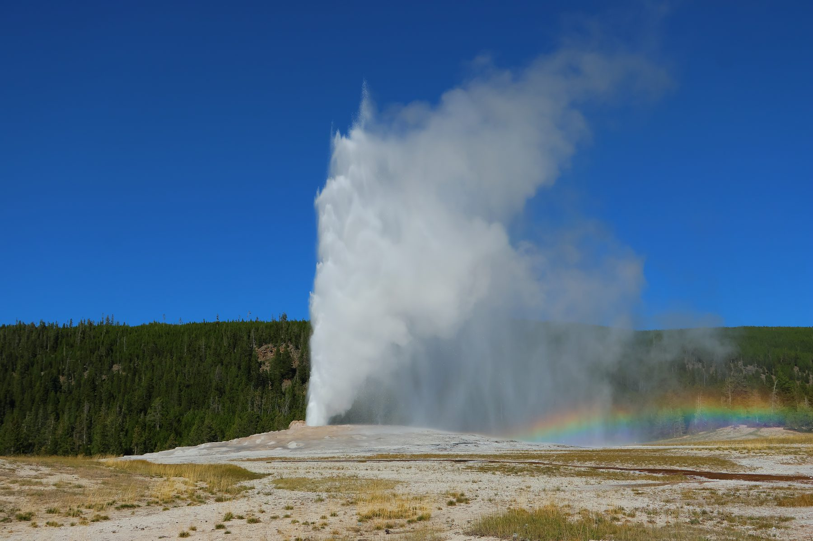
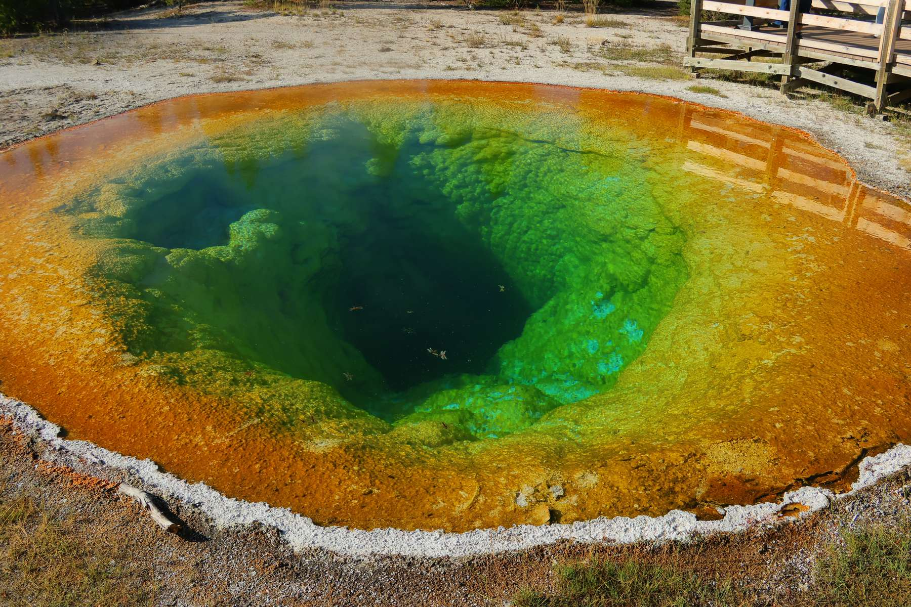
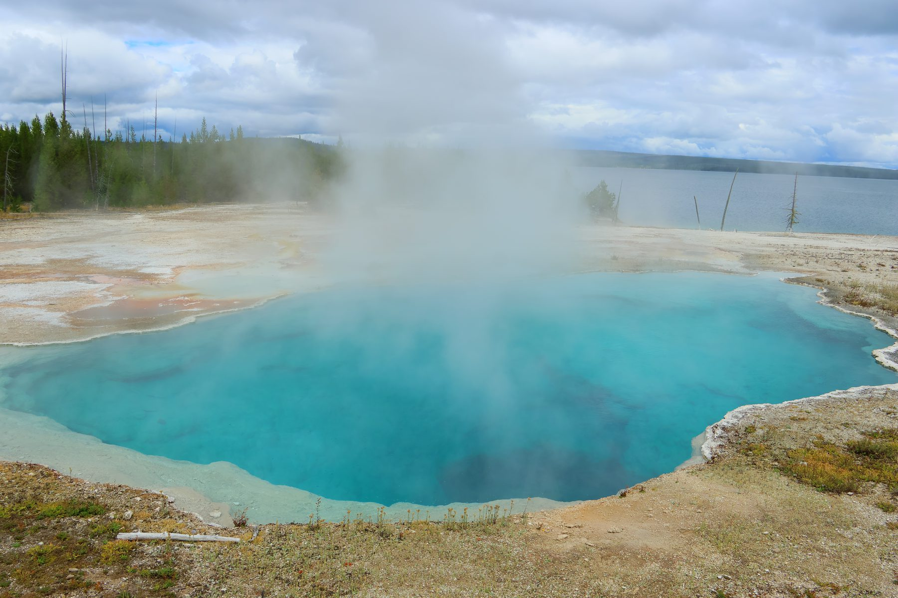